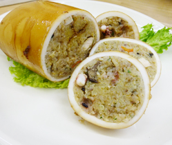

スルメイカのピラフ詰め
- 調理時間：60 分
- （一人当たり）
- カロリー：541kcal
- たんぱく質：29.5g
- 脂質：9.4g
- 炭水化物：76.1g
- 塩分：2.7g

＜2人分＞
- スルメイカ
- 1杯
- みりん・醤油
- 各50ml
- 米
- 150g
- タマネギ
- 1/6個
- ニンジン
- 30g
- 水
- 150ml
- 塩
- 小さじ1/2
- コショウ
- 少々
- カレー粉
- 小さじ1/2
- サラダ油
- 少々
- パセリ
- 少々

- ☆イカの下処理をする
①イカの中綿を抜き、骨を抜き、きれいに洗い、皮をはがす。イカゲソも処理する。
片栗粉（分量外）を入れて揉み、水で洗い流す。
②みりんと醤油を合わせた調味料に３０分、漬けて下味をつける。 - ☆シーフードピラフを作る
③米は洗ってざるに上げておく。
④タマネギ、ニンジンは粗いみじん切りにする。
下処理したイカゲソは食べやすい大きさに切る。
⑤フライパンにサラダ油をしき、④の野菜とイカゲソを炒める。
米を加えて透明になるまで炒める。
炊飯器に移し、分量の水を沸かして炊飯器にいれ、塩、コショウ、カレー粉を
いれて、炊く。
⑥炊き上がったらみじん切りのパセリを散らす。 - ☆仕上げる
⑦炊き上がったピラフをイカに詰め、爪楊枝で止める。
⑧フライパンで転がすように焼き、火が通れば出来上がり。輪切りにしていただく。
スルメイカのピラフ詰め
いかめしは、腹わたやイカゲソを取り除いたイカに米を詰め込み、米が飛び出さないように爪楊枝で止めた後、醤油ベースのだし汁で炊き上げた北海道地方の郷土料理です。米が不足していた第二次世界大戦中に、米を節約しても作れる料理として考案されたといわれています。
イカは、低脂肪・低カロリー・高たんぱくなので減量中の方にはもってこいの食材です。また豊富に含まれるタウリンには、ＨＤＬコレステロールを維持したり、血圧を正常に保つはたらきがあります。今回のレシピは趣向を変えてピラフを詰め込みました。和洋中どの味でもおいしく食べられることも魅力です。